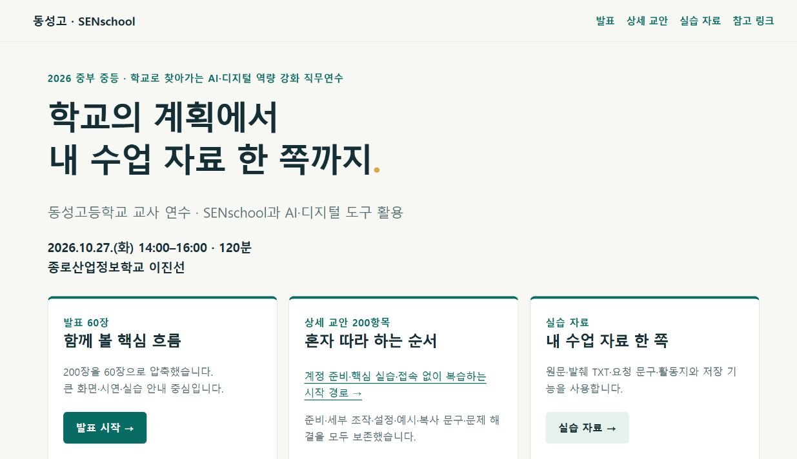
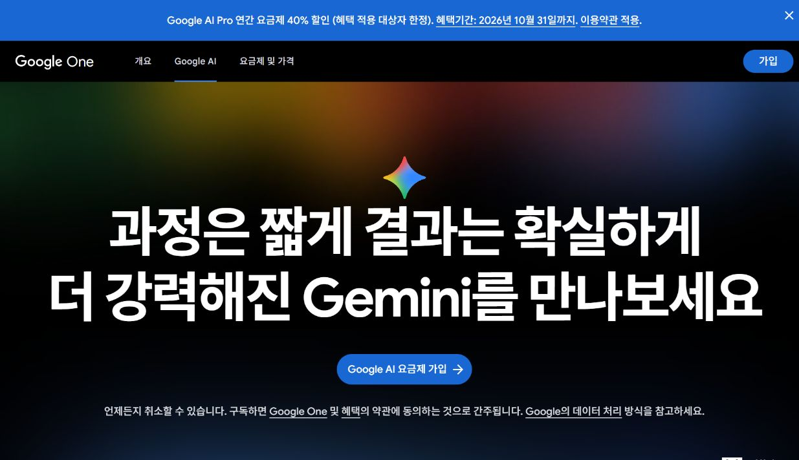
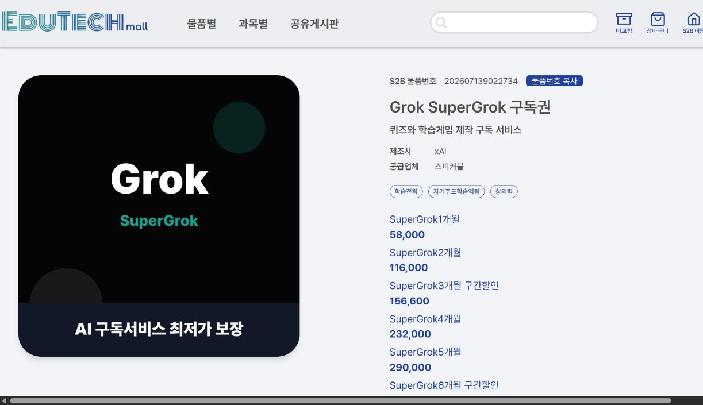
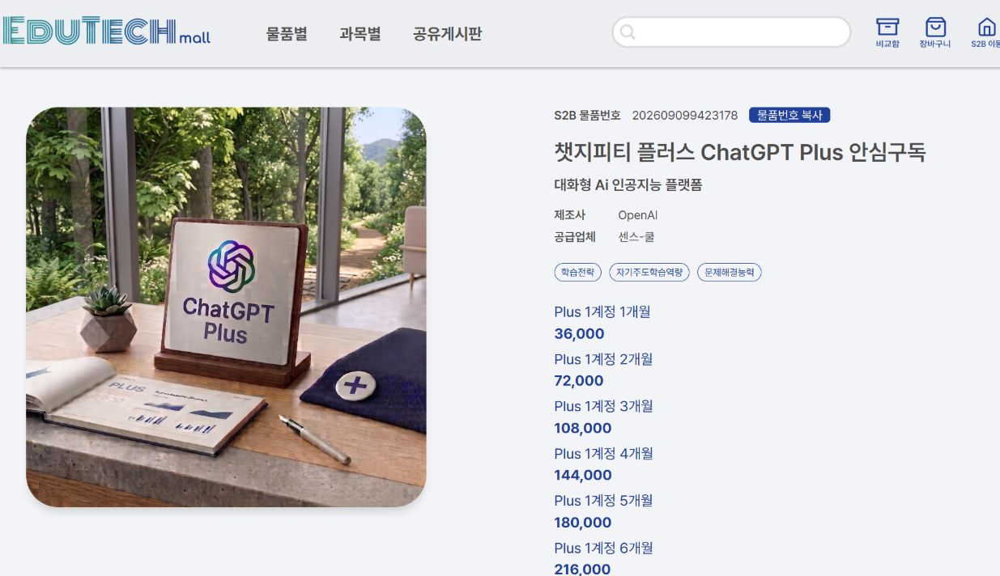
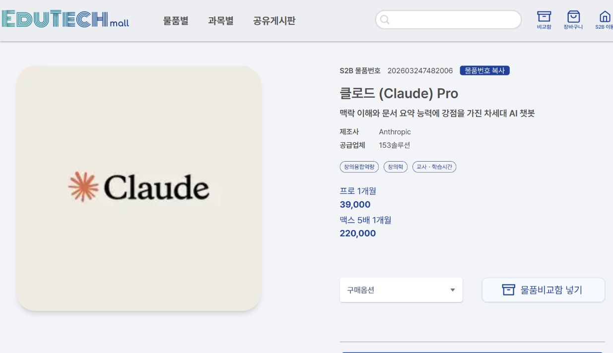
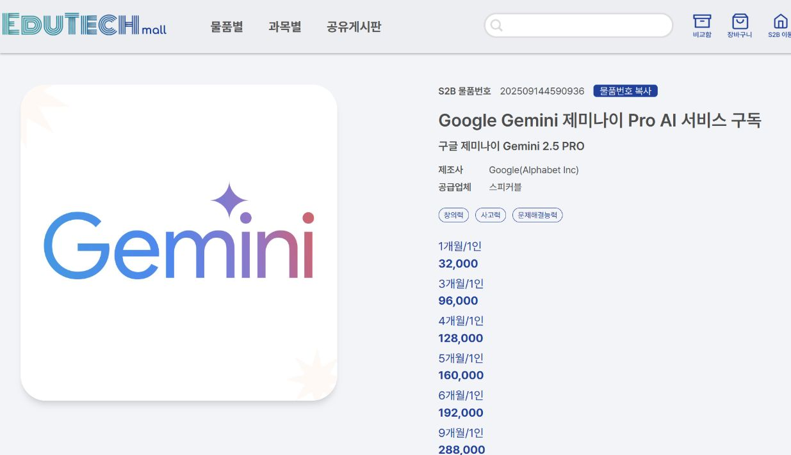
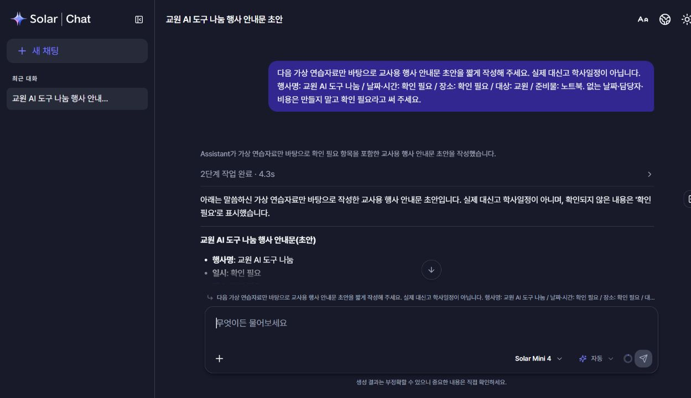
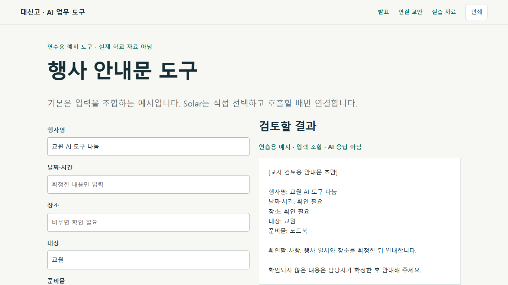

2026-10-28 실제 확인 기록과 예시의 구분
이번 자료를 만든 과정
기획의 근거, 실제 조사 화면, 로컬 제작 결과를 연결합니다.
1. 기획 · 실제 대화 텍스트 확인
- 실제 확인된 사용자 문장: “Gemini Canvas, Claude Artifacts 둘다로 슬라이드 구성해놓자.”
- 실제 확인된 사용자 문장: “upstage도 채팅 구독이 있으면 추가”
- 실제 확인된 사용자 문장: “승인. work모드로 전환”
현재 연결에서 5개 턴의 사용자 메시지와 참조 표식만 반환되었습니다. 상세 개요 본문·첨부·과거 ChatGPT/Work UI 캡처는 반환되지 않았습니다. 원래 대화 URL을 브라우저로 열어도 로그인 화면으로 이동해 원본을 확인하지 못했습니다. 이 발췌는 텍스트 기록이며 과거 화면 재현이 아닙니다. 실제 키가 노출된 메시지는 수집·표시하지 않았습니다.
2. 조사 · 실제 브라우저 화면










3. 실패·판단·수정 · 실제 관찰 범위
| 관찰 | 판단·조치 | 실기록 여부 |
|---|---|---|
| 과거 대화에서 참조 표식만 반환, 첨부 없음 | 사용자가 현재 제공한 확정 범위를 기준으로 제작 / 학교 파일 발췌 중단 | 실제 조회 결과 |
| 웹 검색 도구에서 S2B 주소 접근 불가 | 실제 브라우저 검색·상품 상세로 가격과 기간 확인 | 실제 조사 |
| 공식 가격 페이지가 기간별·상품명별 다른 안내 포함 | Grok 신규/기존 계약·Solar 기본/기간별 가격을 구분 | 실제 공식 자료 대조 |
| 무료/유료 실측 산출물과 유효 API 응답 없음 | 미실측 표시, 가상 비교·예시 모드와 실제 호출 구분 | 실제 확보 범위 |
| 로컬 화면·복사·이동·인쇄 검증 | 구체적인 최종 결과는 검증기록.txt 참고 | 실제 로컬 점검 |
이 페이지는 도구 로그를 통째로 공개하지 않고 확인된 사실만 정리했습니다. 키·인증 헤더·원문 개인정보는 보관하지 않습니다. 오류 상태 설명을 위해 재현한 화면은 실제 외부 서비스 장애 기록으로 쓰지 않습니다.

4. 제작 지시 · 재사용을 위한 요약 예시
현재 제작 지시를 정리한 예시 문구이며 과거 대화 원문 전체가 아닙니다.
복사해서 요청하기
2026년 10월 29일 대신고 일반 교사 90분 연수자료를 만들어 줘. 주제는 ‘AI와 대화하는 것을 넘어, 나만의 업무 도구 만들기’야. 먼저 승인된 26장 시간표와 산출물 목록을 확인하고, 발표·상세 교안·실습자료·강사 노트·참고자료를 연결해 줘. 공식 기능·가격·행사 조건은 확인 날짜와 직접 근거를 남기고, 미확인 가격·성능·과거 작업화면을 사실처럼 만들지 마. 과거 노출된 API 키를 어디에도 옮기지 마. 외부 공개는 내 승인 전까지 하지 마. 브라우저에서 복사·이동·모바일·인쇄를 실제 점검하고 수정 내역과 남은 제한을 알려 줘.
공개 상태
사용자 요청에 따라 GitHub 저장소와 GitHub Pages로 공개하는 자료입니다. API 키와 비공개 학교 자료는 포함하지 않습니다.